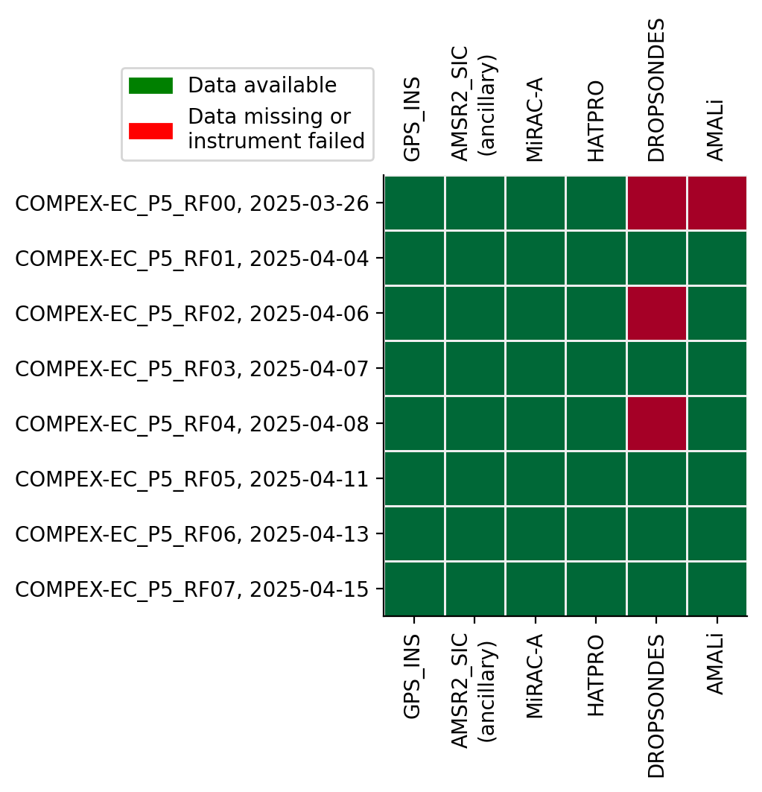

COMPEX-EC#
Clouds over cOMPlEX environment - EarthCARE COMPEX-EC - Polar 5 EarthCARE validation campaign out of Kiruna (2.-16.4.2025).
Detailed flight logs#
RF# |
Date |
Description |
TO |
TD |
HH |
EC |
Track (jpg) |
Track (KML) |
Flight report |
|---|---|---|---|---|---|---|---|---|---|
RF00 |
26.3.2025 |
EarthCARE |
13:21 |
14:32 |
1:11 |
13:58 |
|||
RF01 |
4.4.2025 |
EarthCARE |
11:03 |
16:03 |
5:00 |
13:51 |
|||
RF02 |
6.4.2025 |
EarthCARE |
12:20 |
16:22 |
4:02 |
13:40 |
|||
RF03 |
7.4.2025 |
EarthCARE |
12:06 |
16:00 |
3:54 |
14:20 |
|||
RF04 |
8.4.2025 |
EarthCARE |
11:59 |
15:59 |
4:00 |
13:30 |
|||
RF05 |
11.4.2025 |
EarthCARE |
12:05 |
15:28 |
3:23 |
13:58 |
|||
RF06 |
13.4.2025 |
EarthCARE |
10:37 |
15:41 |
5:04 |
13:47 |
|||
RF07 |
15.4.2025 |
EarthCARE |
10:54 |
15:44 |
4:50 |
13:35 |
{kind=link}
{kind=link}
{kind=link}
{kind=link}
{kind=link}
{kind=link}
{kind=link}
{kind=link}

Flight tracks of the COMPEX-EC campaign.
%matplotlib inline
import ac3airborne
import matplotlib.pyplot as plt
import matplotlib.patches as mpatches
import numpy as np
plt.style.use("../mplstyle/book")
# load intake catalog and flight segments
cat = ac3airborne.get_intake_catalog()
meta = ac3airborne.get_flight_segments()
ancillary = ['AMSR2_SIC']
def data_availability(mission, platform):
"""
Plot data availability matrix
"""
# store data availability in a matrix
data_availability = np.zeros(shape=(len(list(cat[mission][platform])),
len(list(meta[mission][platform]))))
for i, dataset in enumerate(list(cat[mission][platform])):
data_availability[i, :] = np.isin(list(meta[mission][platform]),
list(cat[mission][platform][dataset]))
# plot data availability
yscale = data_availability.shape[1]
fig, ax = plt.subplots(1, 1, figsize=(5, 2+0.4*yscale))
ax.pcolormesh(range(data_availability.shape[0]),
range(data_availability.shape[1]),
data_availability.T,
shading='nearest',
vmin=0,
vmax=1,
cmap='RdYlGn',
edgecolors='#eeeeee')
ax.set_xticks(range(data_availability.shape[0]))
ax.set_yticks(range(data_availability.shape[1]))
xlabels = []
for ds_name in list(cat[mission][platform]):
if ds_name in ancillary:
ds_name += '\n(ancillary)'
xlabels.append(ds_name)
ax.set_xticklabels(xlabels, rotation=90)
y_labels = [flight_id+', '+flight['date'].strftime('%Y-%m-%d')
for flight_id, flight in meta[mission][platform].items()]
ax.set_yticklabels(y_labels)
ax.tick_params(labeltop=True)
ax.invert_yaxis()
available = mpatches.Patch(color='green', label='Data available')
not_flown = mpatches.Patch(color='red', label='Data missing or\ninstrument failed')
ax.legend(handles=[available, not_flown], ncol=1,
bbox_to_anchor=(0, 1.01), loc='lower right')
plt.show()
Polar 5#
data_availability(mission='COMPEX-EC', platform='P5')
